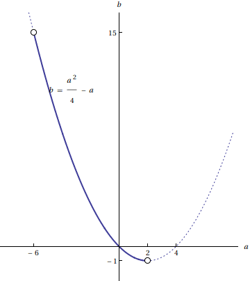

とし、0<θ<πで定義された関数
東京大学 2017年 理科 第1問
問題
実数a,bに対してf(θ)=cos 3θ+a cos 2θ+b cos θ
とし、0<θ<πで定義された関数 を考える。
を考える。
(1) f(θ)とg(θ)をx=cos θの整式で表せ。
(2) g(θ)が0<θ<πの範囲で最小値0をとるためのa,bについての条件を求めよ。また、条件を満たす点(a,b)が描く図形を座標平面上に図示せよ。
解答
(1)


TrigExpandで展開して に置換し、f(θ)は
に置換し、f(θ)は


同様にg(θ)は


(2)
0<θ<πにおいて-1<x<1なので、g(θ)の最小値は


得られた解の内、a≥2およびa≤-6のものはxがIndeterminateなので、最小値(min)ではなく下限値(inf)を表している。
従って最小値を持つのは-6<a<2のときで、最小値は 。
。
これが0なので、a,bについての条件は


この領域を図示すると、下図の太実線部(端点は含まない)。

